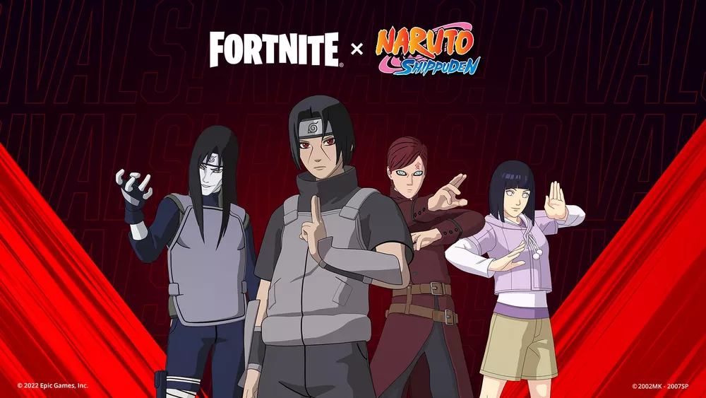
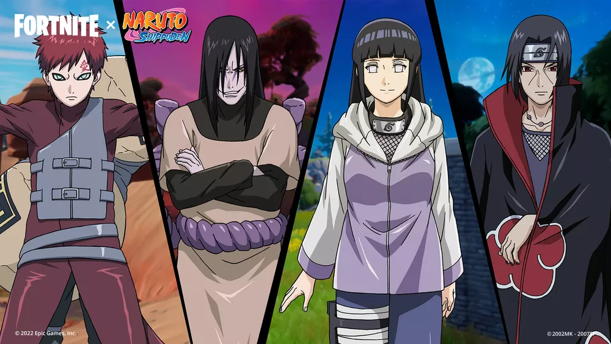
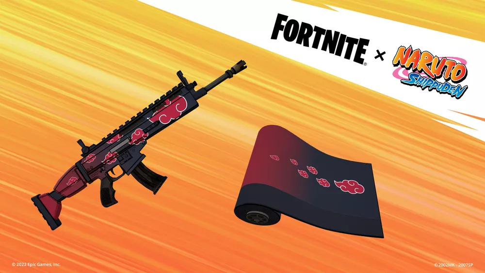

A Epic Games divulgou, nesta terça-feira, os itens da nova colaboração oficial de Fortnite com Naruto. A parceria trará skins dos personagens Itachi, Gaara, Orochimaru e Hinata, além de outros cosméticos inspirados no anime. Os novos itens de Naruto estarão disponíveis no Fortnite a partir das 21h (horário de Brasília) do dia 23 de junho. Os cosméticos poderão ser adquiridos na loja junto com a antiga coleção da Equipe 7 do anime.
As principais adições da nova parceria entre Naruto e Fortnite serão as skins de quatro novos personagens. Itachi, Gaara, Orochimaru e Hinata ganharão visuais exclusivos que poderão ser utilizados pelos jogadores. Cada personagem terá uma skin principal e outra alternativa.
A Epic Games ainda não divulgou o preço de cada visual da nova colaboração com Naruto, mas é esperado que as skins de personagens custem cerca de 1.500 V-Bucks, mesmo valor dos cosméticos da primeira parceria.
A colaboração entre Naruto e Fortnite trará também skins de acessórios para as costas, picaretas, asas-deltas e gestos de rivais.
A desenvolvedora também não divulgou o preço de todos os novos cosméticos, mas é esperado que os gestos custem 300 V-Bucks, as ferramentas de coleta de 500 a 800 V-Bucks, e as asas-deltas cerca de 1.200 V-Bucks.
Os jogadores poderão comprar os novos itens através dos pacotões. O Pacotão Itachi e Orochimaru vem com o Traje Itachi Uchiha, o Acessório para as Costas Máscara da ANBU, o Traje Orochimaru e a Tela de Carregamento Ninjas da Aldeia do Fortnite.
O Pacotão Gaara e Hinata vem com o Traje Gaara, o Acessório para as Costas Cabaça de Areia, a Asa-delta Nuvem de Areia do Gaara, o Traje Hinata Hyuga, o Acessório para as Costas Mochila da Hinata e a Tela de Carregamento Shinobis.
O Pacotão Equipamentos Ninja vem com o Gesto Rasenshuriken, a Asa-delta Manda, a Picareta Kunai do Minato, a Picareta Espada de Kusanagi e o Envelopamento Akatsuki.

A Epic Games também não revelou o preço dos pacotões, mas é esperado que eles custem cerca de 2.200 V-Bucks.
Com a nova parceria, o mapa Aldeia da Folha voltará ao Fortnite. Os locais Residência do Hokage, Ichiraku e o Hospital poderão ser visitados pelos jogadores. Os players também poderão concluir tarefas de Naruto, Sasuke, Sakura e Kakashi para ganhar EXP e desbloquear outros locais como o Vale do Fim, a Arena do Exame Chunin e a Mente de Naruto.
Para entrar no Mapa de Aventura Aldeia da Folha, os jogadores precisarão selecionar o ícone "Aventura na Aldeia da Folha" na aba Descobrir ou inserir o código 0610-6440-1958.
A nova parceria também trouxe o retorno dos Desafios da Comunidade The Nindo. Os jogadores já podem concluir as Tarefas de Itachi, Gaara, Orochimaru e Hinata no Battle Royale ou na Construção Zero do Fortnite para ganharem Emoticons e as recompensas finais Envelopamento Akatsuki e Asa-delta Manda.